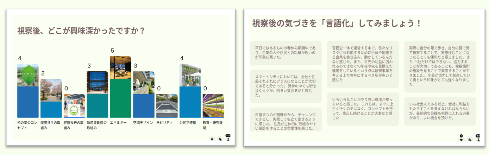
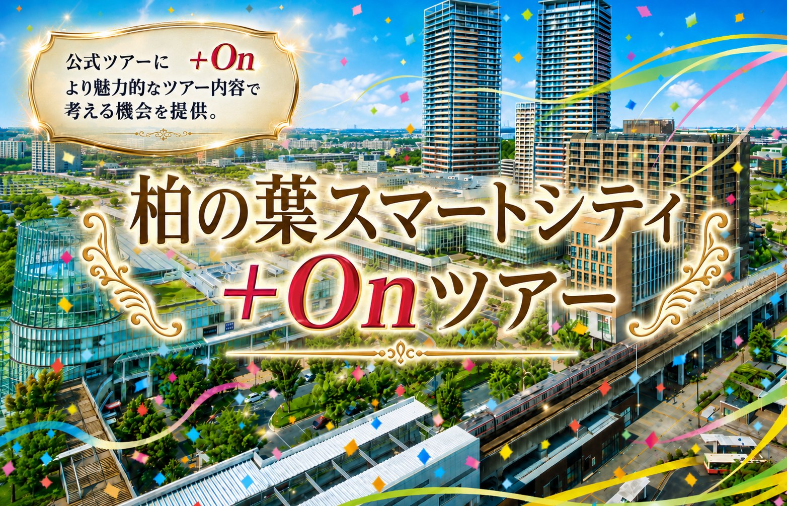
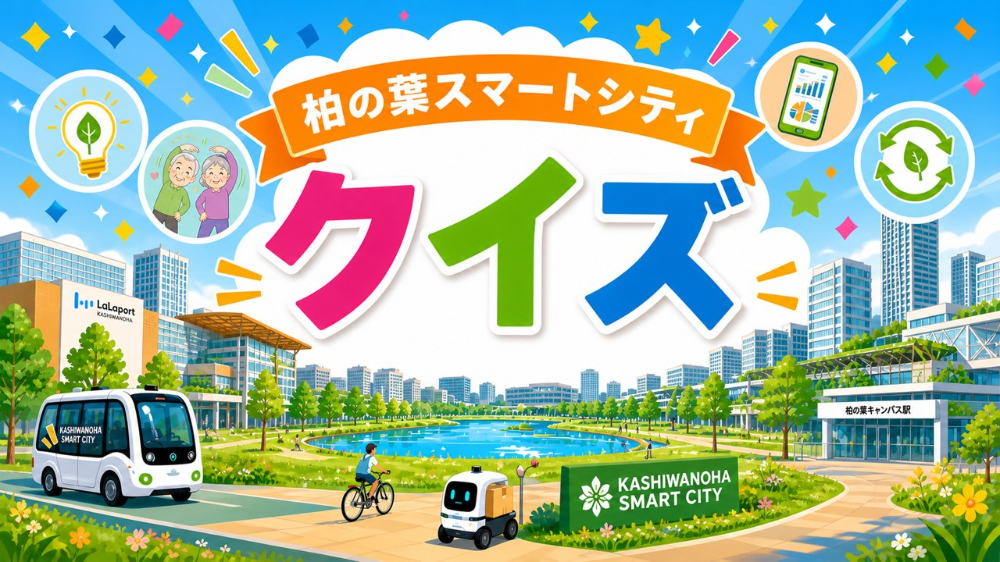
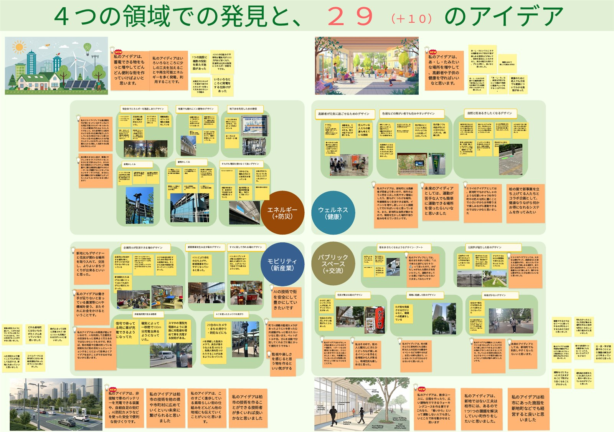
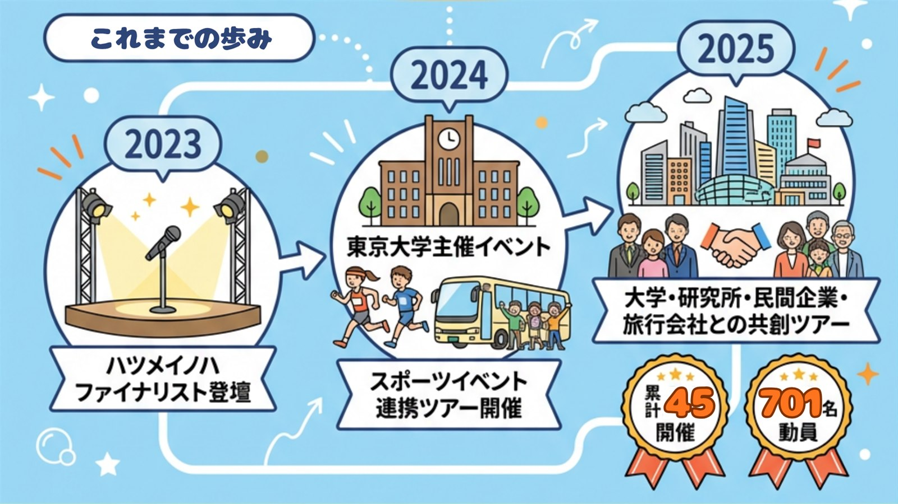
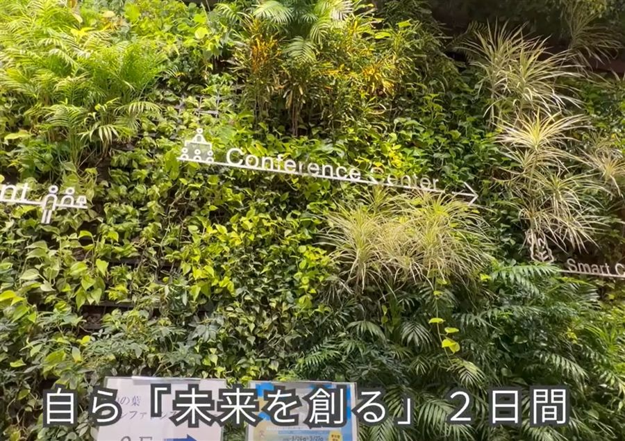
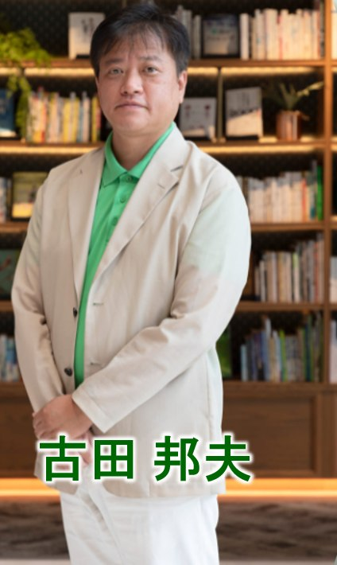

AIを用いたアイデア創出ワークショップ
デジタルツールとAI・デザイン思考を使い、視察で得た気づきをその場で集計・言語化。参加者全員の視点を可視化して対話を深めます。（画像は実際のワークショップ画面）

＋Onツアーとは？
つくばエクスプレス「柏の葉キャンパス」駅を中心に、公・民・学の連携で進化を続けるスマートシティの街を実際に歩きながら、表面的な施設紹介ではなく、街の背景や取り組みの意味を住民ガイドの視点でお伝えします。UDCK（柏の葉アーバンデザインセンター）やKOIL（柏の葉オープンイノベーションラボ）といった共創拠点、街なかの実証実験の現場をめぐり、対話と問いで深掘りし、AIツールとデザイン思考で気づきをアイデアに変えていきます。
| 公式ツアー | ＋Onツアー | |
|---|---|---|
| 位置づけ | 全体像を知る入口 | 目的に合わせた深い学び |
| ガイド | 標準的なご案内 | 住民×エバンジェリストが対話で深掘り |
| 内容 | 定番コース | 事前ヒアリングでセミカスタマイズ |
| AI活用 | ─ | AIワークショップで発想をカタチに |
| ゴール | 街を知る | 事業・研究・教育の「次の一手」 |
※ 公式ツアーを否定するものではありません。全体像の把握には公式ツアーもおすすめしており、併用・連携も歓迎です。
スマートシティ、ウェルビーイング、モビリティ、環境、共創、地域づくりに関心のあるみなさまへ。
街の取り組みや仕組みを、背景から多角的に理解できます。
他地域・他事例と比較する視点と、自組織へのヒントが得られます。
自分たちの課題や目的に応じた、具体的な示唆を持ち帰れます。
実際に暮らす人の視点から、街の本質を学べます。
AIワークショップで気づきを整理し、アイデアを具体化します。
参加目的・関心テーマ・期待する成果を確認
訪問場所や解説ポイントをセミカスタマイズ
柏の葉スマートシティを歩きながら体感
質疑と問いかけで学びを自分ごと化
気づきとアイデアを整理し可視化
学びを整理し、今後の実践につなげる
目的に応じて組み合わせられるオプションをご用意しています。実際の開催で使用した成果物・画面の一例とあわせてご紹介します。

デジタルツールとAI・デザイン思考を使い、視察で得た気づきをその場で集計・言語化。参加者全員の視点を可視化して対話を深めます。（画像は実際のワークショップ画面）

ツアーやイベントにちなんだ柏の葉オリジナルQUIZをその場で出題。楽しみながら街の理解が深まり、チームの対話も活性化します。

視察とワークショップで生まれた発見・アイデアをボードやレポートに整理してお渡しします。（画像は実際の成果物：4つの領域での発見と29のアイデア）
※ オプションの組み合わせ・所要時間・費用は、目的に合わせてご提案します。
2023年の「ハツメイノハ」ファイナリスト登壇をきっかけに、東京大学主催イベントやスポーツイベントとの連携、大学・研究所・民間企業・旅行会社との共創ツアーへと広がってきました。
※ 2026年4月1日時点


実際にツアーへご参加いただいたみなさまから、うれしい声をいただいています。
ガイドの解説があるからこそ、ひとりで歩き回るだけでは気づけない発見がありました。
60代・男性・大阪府｜研究機関
専門知識を持つ住民の方だからこそ、踏み込んだ質問にも的確に答えてもらえました。街への愛着がにじみ出る語り口で、柏の葉の魅力がリアルに伝わってきました。
40代・女性
健康長寿やエネルギーの取り組みが、具体的な施設と結びついて理解できました。
ホテル・観光業
短時間でも学びが多く、仕事の参考になりました。
50代・男性・東京都｜企業経営層
海外や行政関係者にも伝わる、実践的なまちづくりの事例でした。
台湾｜行政・自治体関係

住民のリアルな視点と、企業エバンジェリストの専門性で、
街の価値を「あなたの次の一手」に翻訳します。
柏の葉スマートシティツアーズ 代表
大手電機メーカー 公式エバンジェリスト
内容・人数・オプションにより異なりますが、1開催10万円〜を目安にご相談ください。お見積もりは無料です。
5名程度からご相談可能です。最大80名までの対応実績があります。
小雨の場合は原則実施します。荒天時は内容変更や日程変更を含めてご相談となります。
基本は日本語での実施となります。
原則として現地集合・現地解散です。ツアー中は徒歩での移動を基本とします。柏の葉キャンパス駅からのアクセスが便利です。
撮影できる場所とできない場所があります。当日、都度ご説明します。
可能です。必要な場合は事前にご相談ください。
実施日の14日前からキャンセル料が発生します。詳細はお見積もり・ご相談時にご案内します。
ヒアリング → ご提案 → 内容確定 → 当日実施 → 振り返り、という流れで進めます。ご希望の実施日がある場合は、お早めのご相談がおすすめです。
通常、数営業日以内に返信します。
千葉県柏市・つくばエクスプレス「柏の葉キャンパス」駅周辺で、公・民・学が連携して「環境共生」「健康長寿」「新産業創造」に取り組む先進的なまちづくりのモデル地区です。自動運転バスやエネルギーマネジメントなど多くの実証実験が行われ、国内外から視察・見学が訪れています。
はい。UDCK（柏の葉アーバンデザインセンター）やKOIL（柏の葉オープンイノベーションラボ）、ららぽーと柏の葉、アクアテラスなど、柏の葉キャンパス駅周辺の主要スポットを目的に合わせて巡ります。※施設の状況により見学できない場合があります。
どのような目的で訪れたいかをお聞かせください。目的に合わせて、最適なツアー内容をご提案します。
個別相談も承ります。お見積もりは無料、通常数営業日以内にご返信します。
表示されない場合は「新しいタブで開く」をご利用ください。